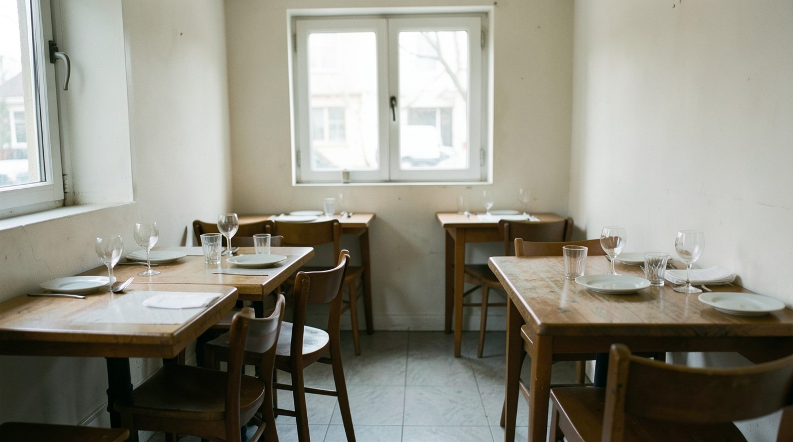
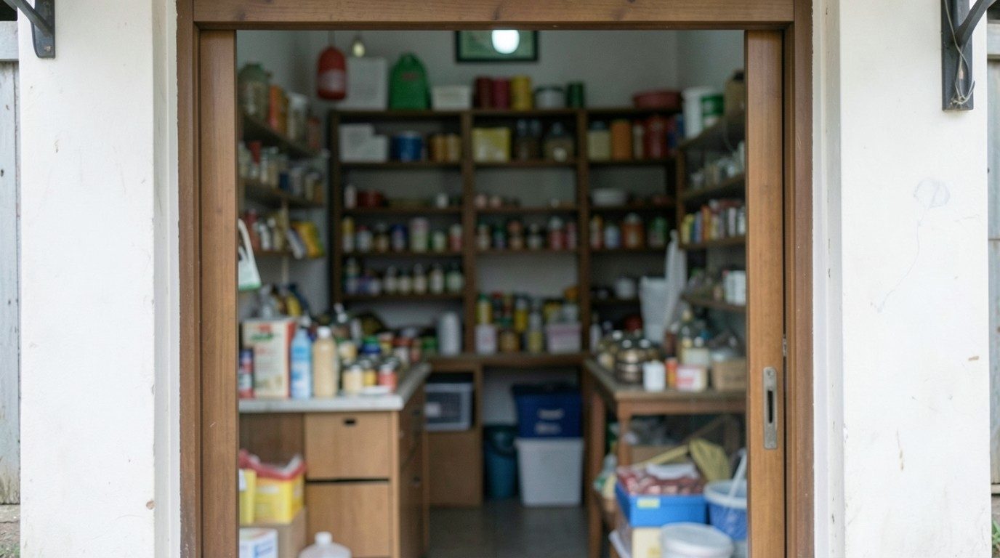

Día 1. Escucha
- Mira la imagen y escucha el diálogo una vez, sin leer.
- Escucha cada palabra y elige el significado.
- Escucha otra vez y lee. Tapa el español; destápalo solo si lo necesitas.
Diálogo
Ms. Vega. Hello. I am Ms. Vega. I am the boss at this hotel.
Hola. Soy la señora Vega. Soy la jefa de este hotel.
Ana. Hello, Ms. Vega. My name is Ana Morales. Nice to meet you.
Hola, señora Vega. Me llamo Ana Morales. Mucho gusto.
Ana. No, I don't. I work at this hotel. My friend works at a restaurant.
No. Trabajo en este hotel. Mi amigo trabaja en un restaurante.
Ms. Vega. What is your job? You help customers at this hotel.
¿Cuál es su trabajo? Usted atiende a los clientes de este hotel.
Ana. My job is at this hotel. Thank you, Ms. Vega.
Mi trabajo es en este hotel. Gracias, señora Vega.
Imágenes
Escucha las cuatro palabras. Para cada una, escribe la letra de la imagen.


Día 2. Estudia
En español la pregunta puede ser igual que la frase: ¿Trabajas en una tienda?
En inglés la pregunta necesita do (o does con he, she): Do you work at a shop? Does he work at an office?
Respuesta corta: Yes, I do. No, I don't. Yes, he does. No, he doesn't.
No digas Where you work? No digas You speak English?
- Corrige: Where you work?
- Corrige: You speak English?
- Completa: ___ he work at an office?
- Completa: Do you speak Spanish? — Yes, I ___.
- Elige: (a) Does she works at a hotel? (b) Does she work at a hotel?
- Completa: Does your boss speak English? — No, she ___.
Las respuestas están en la clave.
/dʒ/ in job
La j de job no es la j española de «jefe» ni la y de «yo»: es un sonido como «dy» muy junto, con los labios un poco hacia afuera. Primero d, después sh con voz: d-job.
Escucha. Repite. Grábate y escucha tu grabación una vez. Repite con el modelo.
Tarjetas
Di la palabra en español. Después toca la tarjeta para ver la respuesta y un ejemplo. Copia las tarjetas en papel.
job
trabajo (empleo)
What is your job?
hotel
hotel
I am the boss at this hotel.
restaurant
restaurante
No, I don't. I work at this hotel. My friend works at a restaurant.
shop
tienda
Do you work at a shop?
office
oficina
No, he doesn't. He works at an office.
customer
cliente
He is a customer. Can you help him?
boss
jefe
I am the boss at this hotel.
speak
hablar
Do you speak English?
English
inglés
Do you speak English?
Spanish
español
I speak Spanish and some English.
Día 3. Habla y escribe
Tu presentación en el trabajo
Primero lee la presentación de Ana para su primer día. Después escribe la tuya: nombre, ciudad, trabajo e idiomas, y dila en voz alta con la pista de pausas.
Hello. My name is Ana Morales.
I am from Panama City.
I work at this hotel.
I help customers.
I speak Spanish and some English.
Nice to meet you.
Hello. My name is Ana Morales. I am from Panama City. My job is at this hotel. I speak Spanish and some English. Nice to meet you.
Conversación con Ms. Vega
Ms. Vega pregunta. Suena un tono. Tú respondes en el silencio. Después Ana responde.
- Primera vez: responde como Ana.
- Segunda vez: responde sobre ti. Grábate con el teléfono.
- Ms. Vega. Hello. What is your name?
Ana. Hello. My name is Ana Morales. - Ms. Vega. Where are you from?
Ana. I am from Panama City. - Ms. Vega. Where do you work?
Ana. I work at this hotel. I help customers. - Ms. Vega. Do you speak English?
Ana. Yes, I do. I speak Spanish and some English. - Ms. Vega. Does your husband speak English?
Ana. No, he doesn't. He speaks Spanish. - Ms. Vega. He is a customer.
Ana. Hello. Can I help you?
Ahora tú
Hello. My name is ________.
I am from ________.
I work at ________.
I ________.
I speak ________.
Nice to meet you.
Día 4. Otra vez, solo en inglés
Lee el diálogo una vez. Después habla con el audio al mismo tiempo.
Ms. Vega. Hello. I am Ms. Vega. I am the boss at this hotel.
Ana. Hello, Ms. Vega. My name is Ana Morales. Nice to meet you.
Ms. Vega. Do you work at a shop?
Ana. No, I don't. I work at this hotel. My friend works at a restaurant.
Ms. Vega. Does your husband work at a restaurant?
Ana. No, he doesn't. He works at an office.
Ms. Vega. Do you speak English?
Ana. Yes, I do. I speak Spanish and some English.
Ms. Vega. What is your job? You help customers at this hotel.
Ana. My job is at this hotel. Thank you, Ms. Vega.
Ms. Vega. He is a customer. Can you help him?
Ana. Hello. Can I help you?
Sam. Yes, please. Can I have a room?
Lectura
Lee el texto dos veces. La segunda vez, lee con el audio.
This is Sam. He is a customer at the hotel. He speaks English. He doesn't speak Spanish. He has a room at the hotel, and he eats at a restaurant near the station. Ms. Vega is the boss at the hotel. She speaks English and Spanish. Does Sam work at the hotel? No, he doesn't. Ana works at the hotel.
¿Puedo hacerlo?
I can say what I do and greet a customer.
Corrige: Where you work? He speak English?
Si todavía no, repite el día 2 (Do you…? Does he…?). Después repite el día 3 con la pista de pausas.